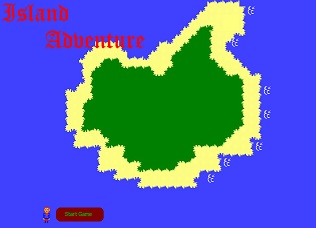

Welcome to my page. This web page will mainly be used as a test page were I can upload content, change stuff and just play around.
Had some fun creating this game in a one week challenge with a friend. I used Game maker were he used Unity. Feel free to download it. The objective was to create a game in one week the theme was Island survival and restrictions was that there should be no magic or knights,
Our motto was "Keep it basic" so don't expect much.
Using Game Maker was easy and fun but still time consuming as I guess any game development will be.
15 October 2017
